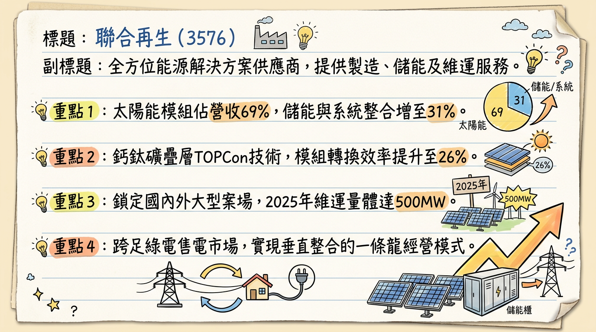
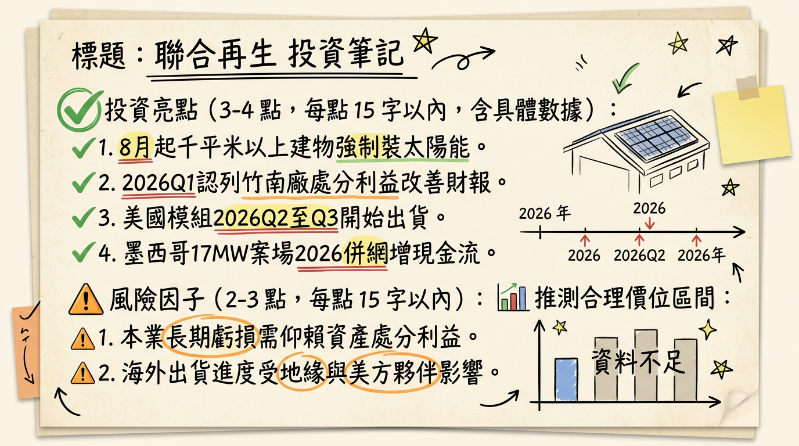

3576 聯合再生 深度研究報告
一句話摘要
從太陽能製造商轉型為全方位綠能解決方案商，2026年受惠於資產處分利益與「屋頂光電強制化」政策紅利，預期將迎來獲利轉折點。公司概覽
聯合再生（3576）為台灣太陽能領導廠商，已從純電池製造轉型為垂直整合的能源服務商。業務涵蓋製造、系統建置（EPC）、維運（O&M）及儲能系統。
營收結構分析（2025 Q4 法說會數據）
| 業務類別 | 營收佔比 | 發展重點 |
|---|---|---|
| 太陽能產品（電池與模組） | 69% | 主力為 TOPCon 模組，轉換效率達 24.5%+ |
| 新事業（儲能、EPC、維運、電站） | 31% | 獲利主要貢獻來源，目標 2026 年進一步提升 |
| 地域分布目標 (2026) | 台灣 40% / 海外 60% | 積極開拓美國、東南亞與日本市場 |
核心競爭優勢
財務分析
近 6 個月月營收趨勢
| 月份 | 營收金額 (億新台幣) | 月增率 MoM | 年增率 YoY | 備註 |
|---|---|---|---|---|
| 2026/01 | 1.20 | -51.90% | -45.37% | 季節性低迷與市場去庫存 |
| 2025/12 | 2.49 | +87.90% | -74.98% | 年底趕工併網效應 |
| 2025/11 | 1.33 | -44.03% | -54.53% | |
| 2025/10 | 2.37 | -16.55% | -21.88% | |
| 2025/09 | 2.84 | +0.95% | -33.52% | |
| 2025/08 | 2.81 | +57.87% | -39.15% |
年度與季度數據
- 2024 營收： 57.84 億元，EPS -1.31 元。
- 2025 營收： 30.47 億元（自結），YoY -47.33%。
- 2025 前三季 EPS： -0.63 元（Q3 單季 -0.25 元）。
法說會重點 (2025/12/19)
券商觀點
註：由於公司正處轉型虧損期，近期大型券商多採觀察評等，下表彙整市場共識與投資網誌觀點。| 券商/機構名 | 目標價 | 評等 | 日期 | 核心觀點 |
|---|---|---|---|---|
| 市場共識 (Consensus) | 22.0 - 25.0 | 中立/觀察 | 2026/02 | 受惠 8 月新政，短期題材強勁 |
| CMoney 投資網誌 | N/A | 短線看多 | 2026/02 | 政策利多加持，資產處分利益挹注 |
| 法人預估 | 轉盈目標 | 買進(轉機) | 2026/01 | 2026 EPS 有望受業外挹注挑戰 0.1~0.3 元 |
財報深度分析
利潤率趨勢表格
| 季度 | 毛利率 (%) | 營業利益率 (%) | 稅後淨利率 (%) | EPS (元) |
|---|---|---|---|---|
| 2025 Q3 | -37.29% | -63.69% | -55.25% | -0.25 |
| 2025 Q2 | -31.12% | -58.61% | -61.04% | -0.23 |
| 2025 Q1 | -5.20% | -25.71% | -18.29% | -0.15 |
| 2024 Q4 | 38.62% | 25.85% | -13.49% | -0.32 |
資產與資本分析
- 存貨分析： 2025 Q3 存貨週轉天數為 109.19 天，反映模組市場競爭激烈及庫存去化壓力。
- 資本支出： 近三年維持在 4.5~5 億元水平，2026 年重點轉向數據化維運與儲能案場。
- 負債管理： 預計透過 2026 Q1 入帳的 28 億元資產處分金大幅償還銀行借款。
股權異動
- 核心持股： 國發基金 (6.09%) 與耀華玻璃 (5.81%) 為主要大股東，官股背景穩固。
- 董監持股： 12.24%，近期無大規模申報轉讓。
- 融資與法人： 外資於 2026 年 2 月下旬回補逾 1.7 萬張，投信動向不明顯。
產業分析
全球競爭格局 (2025-2026 預計)
| 排名 | 公司名稱 | 主要技術 | 2025 預估市佔 | 競爭威脅 |
|---|---|---|---|---|
| 1 | 晶科能源 (CN) | TOPCon | 20% | 產能過剩、價格戰 |
| 2 | 隆基綠能 (CN) | BC 電池 | 18% | 研發投入極高 |
| 3 | 聯合再生 (TW) | TOPCon / 儲能 | < 1% | 規模較小，轉向利基市場 |
台灣同業比較 (2025 預估數據)
| 公司 (代號) | 營收規模 (億) | 毛利率 | 核心戰略 |
|---|---|---|---|
| 聯合再生 (3576) | 30.47 | 負值(改善中) | 儲能元年、資產活化 |
| 元晶 (6443) | 70-80 | 5% - 12% | M10/G12 TOPCon 模組為主 |
| 茂迪 (6244) | 35-45 | 10% - 15% | 專注鈣鈦礦疊層技術研發 |
近期催化劑
- 利多：
2. 業外進補： 2026 Q1 認列竹南廠處分利益 21 億元。
3. 太空 AI 題材： 鈣鈦礦電池輕量抗輻射，受惠 Space AI 電池商機。
- 利空：
2. 營收低迷： 2026/01 營收衰退幅度仍巨。
⭐ 成長動能時間軸
- 2025 Q4 - 2026 Q1： 台南廠全面汰換 PERC，升級至 TOPCon 高階產線（400-500MW）。
- 2026 Q1： 竹南廠 28 億元交易完成，21 億元處分利益入帳。
- 2026 H1： 4.2MW 表後儲能示範案場在台南量產營運。
- 2026 Q2-Q3： 「Made in USA」 合作模組開始出貨美國，規避關稅壁壘。
- 2026/08/01： 《再生能源發展條例》新政實施，屋頂型模組需求進入爆发期。
2026 展望
- 成長動能：
2. 外銷比重： 目標 60% 營收來自海外，避開國內單一市場風險。
3. 財務轉正： 業外利益確保 2026 全年獲利無虞。
- 風險：
2. 國內電網饋線不足限制案場開發速度。
投資結論
本報告由 AI 自動產生，資料來源為公開網路資訊，僅供參考，不構成投資建議。產生時間：2026-03-01 03:44
📊 資訊卡


